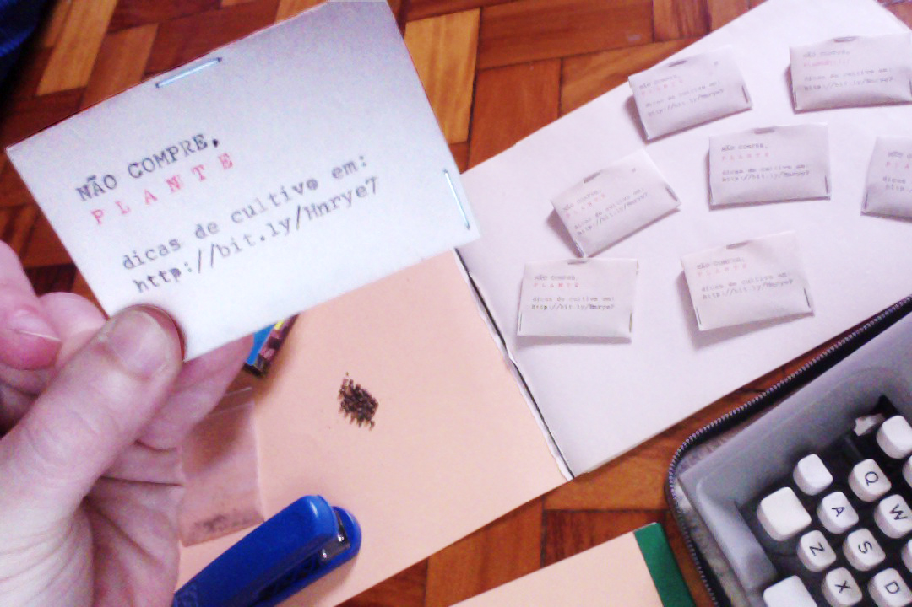

A primeira humana a escrever códigos <3

Ada, filha do famoso Lord Byron, merecia mais fama que o próprio pai, pois foi o primeiro ser humano da história a criar códigos. Tá bom pra você? Hum.
INFÂNCIA RICA
Ada Lovelace nasceu Augusta Ada Byron em 10 de dezembro de 1815, em Londres, na Inglaterra. Filha do poeta George Gordon Byron, 6 º Barão Byron, e de Anne Isabella "Annabella" Milbanke, Baronesa Byron
RENEGANA PELO PAI
Ada, filha do famoso Lord Byron, merecia mais fama que o próprio pai, pois foi o primeiro ser humano da história a criar códigos. Tá bom pra você? Hum.
O PRIMEIRO PROGRAMA DE COMPUTADOR
Ada, filha do famoso Lord Byron, merecia mais fama que o próprio pai, pois foi o primeiro ser humano da história a criar códigos. Tá bom pra você? Hum.
